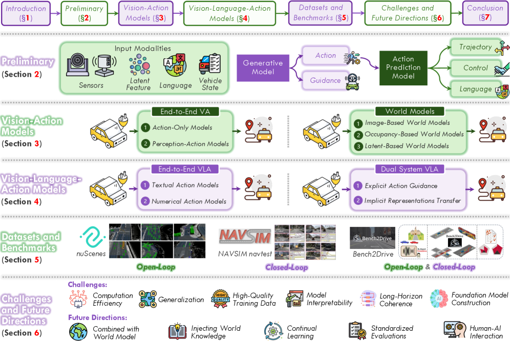

自動運転は長い間、モジュール式の「知覚-判断-行動」パイプラインに依存してきた。このアーキテクチャでは、手作業で設計されたインターフェースとルールベースのコンポーネントが複雑なシナリオやロングテールシナリオで破綻することが多い。また、カスケード設計は知覚エラーを伝播させ、下流の計画と制御の品質を低下させる。Vision-Action（VA）モデルは、視覚入力から行動への直接的なマッピングを学習することでいくつかの制限を解消するが、不透明なまま、分布シフトに対して脆弱で、構造化された推論や命令追従能力を欠いている。LLMとマルチモーダル学習の最近の進展がVision-Language-Action（VLA）フレームワークの出現を促し、これは知覚と言語に基づく意思決定を統合する。視覚的理解、言語的推論、実行可能な出力を統合することで、VLAは走行ポリシーにとってより解釈可能で汎化可能かつ人間に整合したパラダイムを提供する。本研究は自動運転における新興VLA景観の構造的な特性化を提供する。初期VAアプローチから現代VLAフレームワークへの進化を追跡し、既存手法を2つの主要パラダイムに整理する：単一モデル内で知覚・推論・計画を統合するエンドツーエンドVLAと、低速の熟慮（VLM経由）と高速の安全クリティカルな実行（プランナー経由）を分離するデュアルシステムVLA。
完全自動運転（AD）の追求はAIとロボティクスにおける長年の中心的目標である。従来のADシステムは通常、地図作成、物体検出、運動予測、軌跡計画が別々のコンポーネントとして開発・最適化されるモジュール式「知覚-判断-行動」パイプラインを採用してきた。この設計は構造化された環境で優れた性能を達成したが、手作業のインターフェースとルールへの依存が複雑、動的、ロングテールシナリオでの適応性を制限する。さらに、逐次的カスケードは段階間エラー伝播を引き起こしやすく、知覚ノイズが下流の推論と制御で増幅されて安定性と安全性を損なう。
これらの問題を軽減するため、研究はエンドツーエンド自動運転に向けて移行してきた。Vision-Action（VA）モデルは、模倣学習と強化学習を用いて生のセンサー入力から制御コマンドまたは軌跡ウェイポイントに直接マッピングする。ALVINN、ChauffeurNetなどの初期システムはスケールでの行動クローニングの実現可能性を示した。後続の進歩はより表現力豊かなアーキテクチャを導入した：TransFuserはトランスフォーマーベースのマルチモーダル融合を活用し、UniADは知覚と計画を統合し、VADはベクトル化シーン表現を活用し、DiffusionDriveはマルチモーダル軌跡予測に生成モデリングを適用した。
これらの成功にもかかわらず、VAモデルは根本的な限界を示す：
LLMとLarge Multimodal Models（LMM）の出現が新しいパラダイムVision-Language-Action（VLA）モデルを触媒した。VLAモデルはVLMバックボーンと行動予測ヘッドを結合し、マルチモーダル入力（視覚＋言語）から実行可能な走行行動への直接マッピングを可能にする。DriveMLMとGPT-Driverなどの初期探索が言語モジュールを走行パイプラインに導入し、より統合された設計への道を開いた。LMDriveは言語ガイドのクローズドループ走行を達成し、DriveLMは視覚的質問応答による構造化推論を可能にし、DriveGPT4は決定の自然言語根拠を提供した。最新の研究では、fast/slowシンキングとGRPOベースの最適化を持つAutoVLAや、言語-行動アライメントを明示的に研究するSimLingoなど、緊密に結合された推論と制御を調査している。
VLAフレームワークは大規模Vision-Language Models（VLM）を活用して複雑な走行シーンを解釈し実行可能な行動を生成する。典型的な定式化は次のように表せる：タイムスタンプtでのマルチモーダル入力xと、パラメータθでパラメータ化されたVLMバックボーンF(·)と行動生成ヘッドH(·)から構成される。このセクションでは入力モダリティ、VLMバックボーン、行動予測ヘッドの3コンポーネントを紹介する。
入力xは外部環境と自車状態を記述する異種信号を集約する。これらの入力は4つのカテゴリに分けられる：
VLMバックボーンF(·)はシステムのコア推論エンジンである。通常は大規模な視覚言語モデルであり、その主な役割は多様な入力モダリティを単一の強力な潜在表現に融合することである。視覚入力を処理するための視覚エンコーダ（例：Vision Transformer, ViT）と、視覚特徴に条件付けて生成するLLMデコーダで構成される。ブリッジネットワークまたは統合マルチモーダルトークンモデリングメカニズムが視覚特徴と言語埋め込みを整合させるために使用される。VLMは行動を直接生成するか、より堅牢な結果を開発するために別の行動エキスパートにガイダンスを提供できる。
ヘッドH(·)はVLM潜在表現を行動出力に変換する。出力定式化と生成メカニズムに基づき、行動ヘッドを4つのタイプに分類する：
自動運転の文脈では、行動空間はモデルが車両を制御するために生成できる可能な出力のセットを定義する。行動表現の選択は、モデルの推論が物理的な動きにどのように変換されるかを決定する根本的な設計上の決定である。行動空間表現の3つの主要パラダイムを以下に概説する：
Vision-Action（VA）モデルは自動運転研究の最も早くて最も影響力のある研究系列の一つである。そのコアアイデアは、センサー観測—通常カメラ入力—から走行行動への直接マッピングを学習することで、知覚・予測・計画への明示的なモジュール分解を回避することである。深層ニューラルネットワークにより、VAモデルは模倣学習（専門家デモンストレーションからポリシーを蒸留）と強化学習（試行錯誤インタラクションを通じた行動最適化）という2つの主要な訓練パラダイムで探索されてきた。
エンドツーエンド（E2E）モデルは、生のまたは中間的なセンサー観測から行動または計画軌跡にマッピングする単一のニューラルネットワークを学習する。知覚スーパービジョンが使用されるかどうかに応じて、既存手法は2つのメインカテゴリに分けられる：
ワールドモデルは走行シーンが異なる自車行動下でどのように進化するかを予測することを目指す。シーン動態と自車モーションを共同モデリングすることで、安全で長期的な走行ポリシー学習のための強力なメカニズムを提供する。予測モダリティと表現粒度によって3つのグループに分類される：
VAモデルは広く展開されているが、複雑、曖昧、ロングテールシナリオでの性能を妨げる構造的な限界がある：
VLAモデルはVision-Actionパラダイムを、視覚知覚と大規模視覚言語モデルのマルチモーダル推論能力を結合することで拡張する。チェーン・オブ・ソートスタイルの推論と広範な世界知識を備えたこれらのモデルは、まれで曖昧なロングテール走行シナリオに特に有望である。アーキテクチャの観点から、現在のVLA手法は2つのグループに分けられる：
エンドツーエンドVLAフレームワークは、知覚・推論・計画を単一アーキテクチャ内に統合することを目指す。マルチモーダル大規模言語モデル（MLLM）の汎化能力を活用し、マルチモーダル観測から行動に直接変換することで手作業モジュールとタスク固有のヒューリスティックへの依存を低減する。出力形式に応じて、既存アプローチは2つのファミリーに広く分けられる：
デュアルシステムVLAフレームワークは「ファスト＆スロー思考（Thinking, Fast and Slow）」で一般化されたデュアルプロセス理論から着想を得ている。このパラダイムでは：
VLM出力が専門化プランナーとどのように相互作用するかに応じて、既存手法は2つのファミリーに分類される：
標準化されたデータセットとベンチマークはVLA研究の実証的基盤を形成し、モデル開発、訓練、評価をサポートする。VLA走行システムは知覚・言語・行動を統合するため、VLAデータセットはモダリティ組成、アノテーション粒度、タスク定義において相当な多様性を示す。
従来、VAデータセットはセンサー観測（カメラ、LiDAR、RADAR）と制御行動をペアリングし、画像から軌跡へのエンドツーエンドマッピングを可能にしてきた。代表的なVAデータセット：
言語が推論、命令追従、説明可能性のための重要なモダリティになるにつれ、VLAデータセットが登場した。これらのデータセットは従来の走行ログをテキスト命令、質問-回答ペア、または視覚観測と専門家行動に整合した根拠で拡張する：
評価指標はモデルの出力モダリティに応じて異なる：
このセクションでは、行動予測、計画精度、クローズドループ走行性能にわたってVLAモデルを評価するための定量的ベンチマークを概説する。その中でも最も広く使用されているのは：
VLAモデルはモジュール式スタックから全体的な推論駆動走行エージェントへのシフトを示している。大規模マルチモーダルバックボーンを活用することで、より豊かな環境理解、より強い汎化、より解釈可能な意思決定を約束する。しかし、安全クリティカルな自動運転でその潜在能力を完全に実現するには、いくつかの根本的な課題への対処が必要である。
Vision-Language-Actionモデルは、知覚と高レベルの推論および自然言語理解を結合することで自動運転を再形成している。本研究はVLA問題設定を形式化し、従来のVAパイプラインからの進展を概説し、既存手法をその開発をサポートするデータセットとベンチマークとともに一貫したアーキテクチャファミリーに整理した。VLAシステムは解釈可能性、汎化、人間インタラクションにおいて明確な優位性を提供するが、コアの課題が残っている：シンボリック推論と連続制御の整合、ロングテールシナリオでの堅牢性確保、命令追従と安全性を忠実に測定する評価プロトコルの確立。進展は効率的なアーキテクチャ、より深いマルチモーダル融合、ワールドモデル駆動計画、より厳密な人間中心テストにおける進歩に依存する。全体として、VLAは有能なドライバーだけでなく、コミュニケーション可能で透明性があり人間の意図に応答性の高い自律エージェントを構築するための有望な方向性を示している。